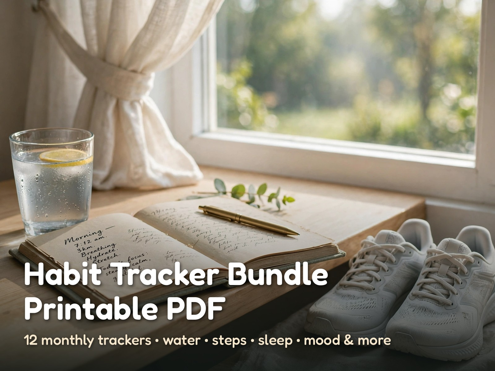

$7 USD — instant download
Habit Tracker Bundle Printable PDF — 12 Monthly Trackers for Water, Steps, Sleep, Mood & More
Get it on GumroadHabit trackers fail when they are just empty grids. These come with the method attached: how to mark each one, what target to set, and what to look for in your own data at the end of the month. The bundle holds twelve printable monthly trackers — one page each, a month laid out as five week-rows with a target line, a weekly total column and notes on the patterns to watch for.
Water tracks glasses per day with anchor-drink scheduling. Steps includes the weekend-crater diagnosis. Sleep logs hours plus quality, and explains why wake time is the lever. Mood is a daily 1–5 designed to be read against your sleep and exercise pages. Meals builds awareness without judgment. Exercise counts any deliberate session under a minimum-session rule that rescues busy days. Reading, no-sugar, meditation and vitamins each carry their own anchoring trick, gratitude asks for one specific line a day, and the optional weight tracker uses weekly averages only, with honest guidance on when to skip it entirely.
Trackers without targets become guilt grids, so the bundle teaches the baseline-week + 10% method for setting targets you will actually hit. The anchor method stacks one new habit per month onto a routine you already keep, without collapsing the rest. A monthly review worksheet turns twelve pages of ticks into decisions, and a 90-day season view shows the quarter you are actually living — which habits stuck, which quietly died, and what next season is for.
These are organization tools for everyday lifestyle habits — not medical advice, and tracking is not a treatment for anything. The weight tracker is entirely optional, and behaviour trackers usually carry the more useful data. Nothing here replaces guidance from a qualified professional about your own health, medication or supplements. Print a tracker a month, keep it where you will see it, and let small honest data beat big vague intentions.
This is a digital download — no physical item will be shipped. For personal use; please do not redistribute or resell the file.